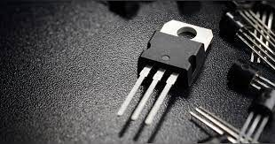
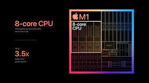

what is the future of computers
what is next
this webpage is designed by kusal and dilith and made by dilith the name is renderforest
homeso you guys know that there are 4 generations of computers.
the generation we use today is the 4 thgeneration
and most of the processors of this generation have a component.
how this works is that insted of a mechanical swith this can
be trigered using a electircal currunt and when its triggerd
that means that a electicity is allowed to flow through
and when it flows through that means it is a 1 in binary and
blocked means 0 , eight of these 1 and 0 are a bit and all the
letters, numbers symbols have bit and a pixel have a bit and that
how we watch videos ,look at pictures and how a computer
do maths.

there are few parts of a cpu alu for example but under a
powerful microscope all the parts of the cpu is made of tra
nsisters and a normal computer chip these days have about
16 bilion transisters they can fit so much transisters in a
chip because the size of a normal transister these days are
7nm and in case you are wondering i nanometer is 1 milionth
of a milimeter .

And to increace the performence of the cpu ypu need to add more
transisters for example to double the performence you need to
double the amount of transister there are to ways of doing it
1 increase the size of the cpu this will not happen because
then you need more silicon and because the cou is bigger it takes
up more space and that is bad next thing you can do is make the tran
sister smaller and that is what manifactures have choosen
but there are few problems one is that at some point all has to
stop because if the transister is smaller than a electon it will not
work.but there is another problem that will be begin in close future
that is electons quantum tunneling.
quantum tunneling occurs at nanoscopic scale that means in the
size of atoms that happens when a particle in our case in a electon
it is that a particle can just go through a obstecle without
stoping, that means a electon passes through a gate of the transister
without getting stop, and that starts at 1.5 nm which we will reach in
the near future, which also means our cpus will stop working if the
transisters reach that point and then you can't have more performance
what is the solution ?
solution no 1: graphene
graphene is a sheet of carbon whichis 1 atom thick
a graphene sheet is transparent but it is stronger
diamond but light as a feather, by using graphene
by graphene you cannot srink the size of the transister
but you can make the transisters there are work a thousand
times faster,i cannot explain the phenomena now but
i will tell it later, ok by making the transisters there
are faster the whole processor gets faster so either
way the processors gets faster ,but graphene is very hard
to make as perfect sheets and when making cpus you need
perfect sheets, and it is expensive but in the future when
scientist find a way to mass produce graphene it willl be great
solution no 2: photonic computers
photonic computers will be much also much faster than normal
computers because insted of using electons photonic computers
use light wich is 100 times faster than electicity so insted
of using wires to let electicity through opticle fibers
and then it is faster than normal computers